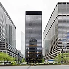

From today's featured article
The Seagram Building is a 38-story skyscraper at 375 Park Avenue, located between 52nd and 53rd Streets in the neighborhood of Midtown Manhattan in New York City. It was the headquarters of the Seagram Company, a Canadian distiller, until 2001. It was designed by Ludwig Mies van der Rohe, Philip Johnson, Ely Jacques Kahn, and Robert Allan Jacobs in the International Style, and completed in 1958. Measuring 515 feet (157 m) tall, it has a glass curtain wall exterior with vertical mullions of bronze and horizontal spandrels made of Muntz metal. A pink granite plaza with two fountains faces Park Avenue; its construction helped influence a zoning ordinance that allowed developers to construct additional floor area in exchange for including plazas outside their buildings. Since 2000, Aby Rosen's RFR Holding has owned the Seagram Building. Elements of it were designated official city landmarks in 1989; the building was added to the National Register of Historic Places in 2006. (Full article...)
In the news
- In the United States, 21 people are killed in a mass shooting at an elementary school in Uvalde, Texas.
- In association football, Manchester City win the English Premier League (Player of the Season Kevin De Bruyne pictured).
- The Australian Labor Party, led by Anthony Albanese, wins the most seats in the Australian federal election.
- Hassan Sheikh Mohamud is elected as President of Somalia.
From today's featured article
A floating market is a market where goods are sold from boats. This photograph shows such a market in Banjarmasin, a city in South Kalimantan, Indonesia, in November 2016. The floating market is a reflection of the culture of the people of Banjarmasin and is a main attraction for tourists visiting South Kalimantan. Photograph credit: Muhammad Haris Recently featured: Las Lajas ShrineBrigid BalfourEastern spinebill ArchiveMore featured pictures
From today's featured article